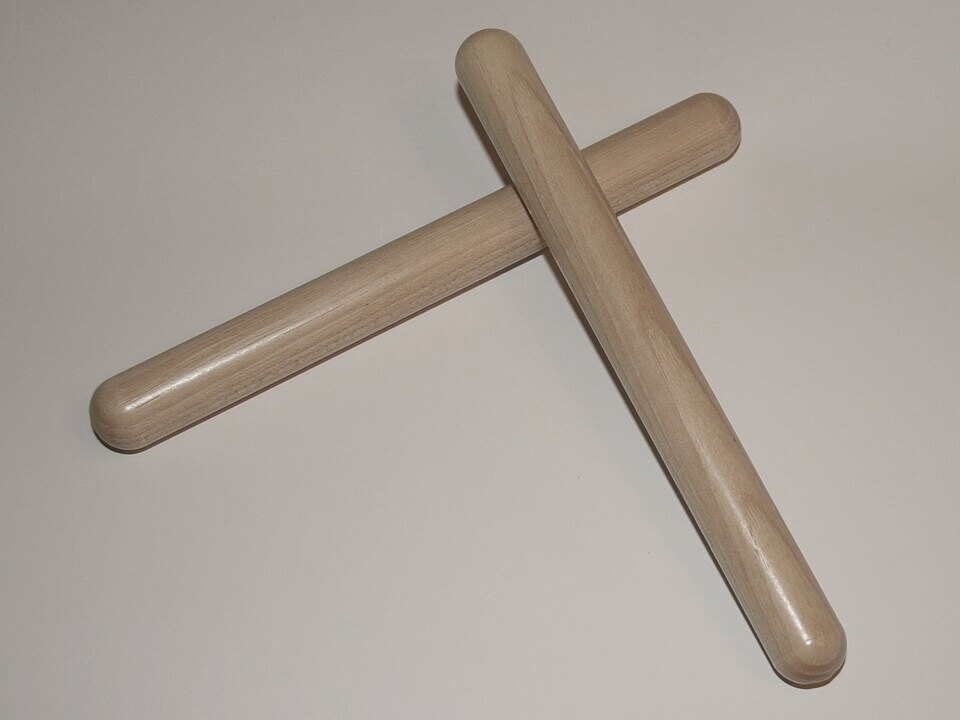
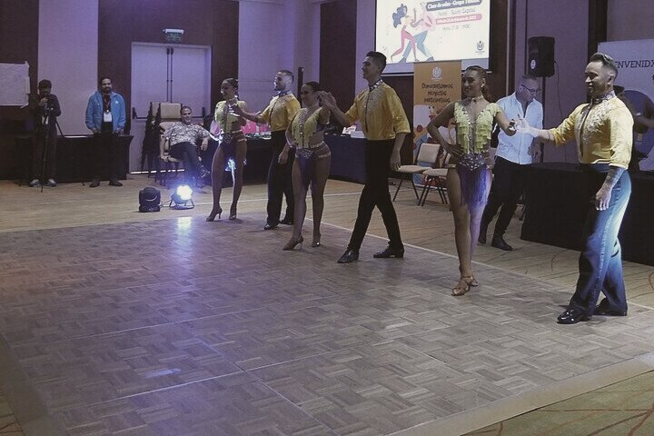
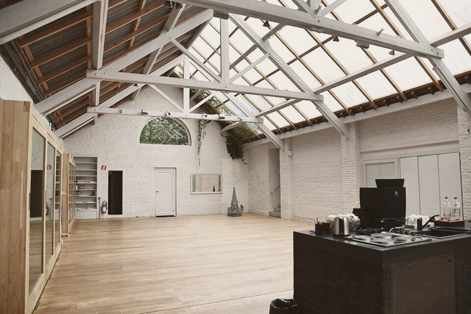
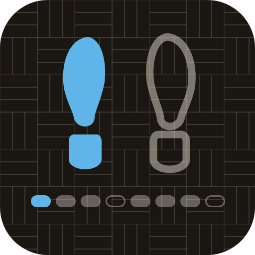
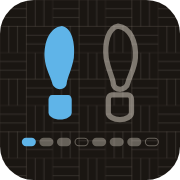

The clave written on the floor. The pad is the clave's grid, each footprint a struck note, the light the strike, decaying like hardwood. Holds are rests.
Brand sheet, 2 November 2026. A salsa practice Lens for SPECS.
A cell rises a step half a beat before its count, strikes on the count with no attack, and decays over one beat to rest. The 1 is teal. 4 and 8 are holds: the cell is empty and the numeral is blank. Running at 170.
The one screen, in plan


The basic step on the pad, from above. The step card reads at hip height: text on the air and two targets of equal weight on purpose, because the dancer reports and the Lens does not nudge.



Photos adapted from Wikimedia Commons, CC BY-SA 4.0: claves by Hnidopichwiki, salsa class by Luis Alvaz, studio by Namahni. Cropped and colour-graded.


Palette
Type
Atkinson Hyperlegible Next. ExtraBold for everything inside the Lens, because a lighter stroke washes out against a bright room; Medium for long text on a page. 4 and 8 are holds: an empty cell, no numeral.
Icon


At 32 px only the 1 survives, so the favicon is the teal dot alone.
Voice
- On the 1.
- Again, from 5.
- Slower. Counts 1 to 4 only.
- Three clean at Full. Next: right turn.
- Right turn: 4 Agains, lost it on 2 and 5.
Laws
- Inside the Lens nothing is darker than 40% luminance and black is never a colour; the walnut floor is a ground for icon, video and page only.
- Ivory is the only ink. Brightness is the hierarchy.
- Teal is on exactly one thing at a time: the 1.
- Holds are rests: nothing lights, the cell is empty, the numeral is blank.
- Left feet solid, right feet outlined, always.
- The pad is a bordered parquet square and nothing else, and parquet appears only on floor surfaces.
- Rise on the and, strike on the count, decay over a beat. Nothing else moves.
- Every edge is a capsule or a rounded end.